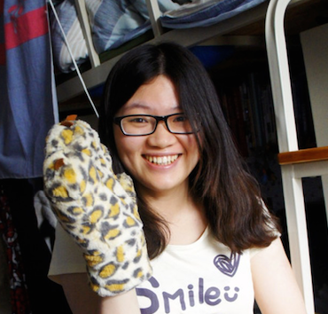

This is an interactive family tree. Please start by entering Family Information of two family members.
For example: Person 1 is Person 2's ________
Submit Update
Please choose how you would like to view the family tree
Sort By Year
Sort By Generation
 Yuming Xu
Yanling Hu
Fei Guo
Jun Fan